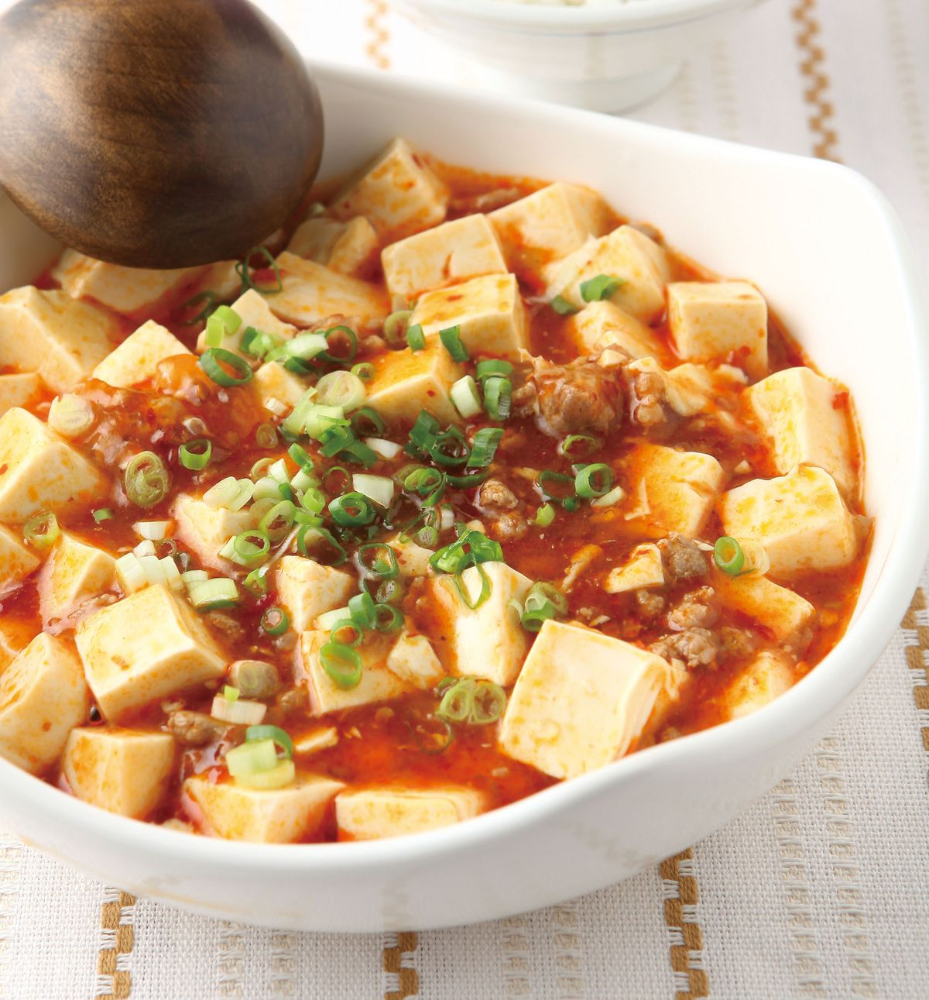

Mapo Tofu 麻婆豆腐

Description
Here's the recipe on how to make a perfect Taiwanese Mapo Tofu
Ingredients
For the mince meat seasoning:
- 1/2 teaspoon white pepper
- 1/2 teaspoon fine salt
- 1 cap of Shaoshing Rice Wine
Thickening mapo tofu sauce:
- 1 teaspoon corn strach
- 1-2 tablespoon water(to create a liquid paste)
Making the mapo tofu:
- 1 tablespoon cooking oil(or any cooking oil of preference)
- 1-2 teaspoons Sichuan peppercorns(add more or less depending on spice level preference)
- 2 teaspoons ginger, finely minced or grated
- 2 spring onions,finely sliced(stalk part of cooking,green part for garnish)
- 500 g mince pork(or any other mince meat depending on preference)
- 2 medium garlic cloves, finely minced or grated
- 500-600 g medium firm tofu or silken tofu, drained and cut into 3/4 inch cubes(add more or less depending on preference)
- 1/3 cup frozen peas(add more or less depending on preference), soaked in warm water
For the mapo tofu sauce:
- 2 tablespoons La/spicy Doubanjiang(chill broad bean paste)
- 1 tablespoon Non-spicy Doubanjiang(broad bean paste)
- 1-2 tablespoon crushed Yellow bean sauce (add more or less depending on preference)
- 1-2 tablespoons spicy chilli sauce (or spicy crushed garlic sauce if not using fresh garlic)
- 1-2 teaspoons white pepper
- 1-2 cups hot water (from kettle)
Garnish:
- Spring onions, finely sliced